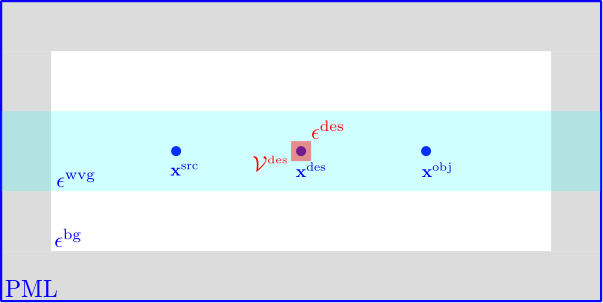
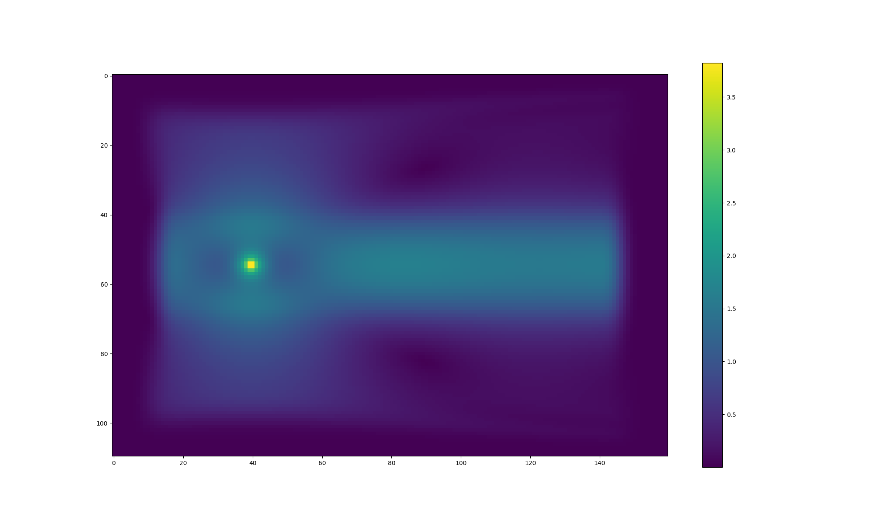
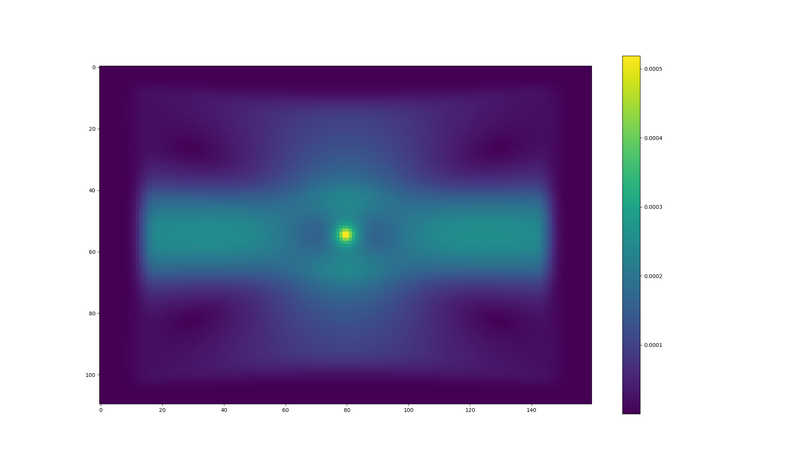

Adjoint-based optimization in meep: Implementation Notes¶
These notes are intended as something of a companion to the user's manual and tutorial documentation for adjoint-based optimization in meep; whereas the goal of those pages is to document the user interface and explain how to use the solver for practical problems, our focus here will be what's going on beneath the hood---how the solver actually works.
Actually, as will be clear to anyone who has ever reviewed the fundamentals of adjoint sensitivity analysis, the theoretical basis of the method and the derivation of its key formulas are almost trivially straightforward, with the only potential source of difficulty being how to massage the mechanics of the procedure into a meep-friendly form.
Toy problem¶
Ultimately we will want to use adjoint methods to differentiate complex objective functions---involving quantities such as Poynting fluxes and mode-expansion coefficients---with respect to various different types of parameters describing material geometries. However, before tackling the problem in that full generality, it's useful to build up to it by starting with a simple toy problem and adding complications one at a time. Thus we consider a simple waveguide geometry, excited by a point source at \vb{x}\sup{src}, and define our objective function to be simply the frequency-domain electric-field amplitude at a point \vb{x}\sup{obj}; we will compute the derivative of this objective function with respect to the permittivity \epsilon\sup{des} in a small "design region" \mc{V}\sup{des} centered at a third point \vb{x}\sup{des}.

Permittivity derivative by finite-differencing¶
An obvious brute-force way to get at this is simply to do two meep calculations, with \epsilon\sup{des} augmented by a small finite amount \Delta\epsilon on the second run, then compute the difference between the frequency-domain electric fields at \vb{x}\sup{obj} and divide by \Delta\epsilon to estimate the derivative. Here are plots of the unperturbed field and the field perturbation (difference between perturbed and unperturbed field):
- \wt{E_{z0}}(\omega_0, \vb{x}) (unperturbed):

- \Delta {\wt E_z}(\omega_0, \vb{x}) (perturbed-unperturbed): 
(Here and below we use the tilde sign (\sim) to indicate frequency-domain fields and sources.)
Permittivity derivative from effective sources¶
One way to think about the effect of a localized permittivity bump goes like this: Increasing the permittivity in some localized region of a material body corresponds to increasing the polarizability in that region---that is, the ease with which positive and negative charges in the material, ordinarily bound so tightly together that they neutralize each other as sources, can be induced by applied electric fields to separate ("polarize"), whereupon they cease to cancel each other and act as effective sources contributing to electromagnetic fields. Of course, if there were no electric field in the material, then we could increase its polarizability as much as we pleased without producing any sources---zero times a bigger coefficient being still zero---but here there is a nonzero electric field throughout our geometry, due to the point source in the unperturbed problem, which means that the effect of bumping the permittivity of the design region may be approximated by adding new sources in that region, with strength proportional to \Delta\epsilon and to the unperturbed electric field. More specifically, in a frequency-domain problem involving time-harmonic fields and sources with angular frequency \omega (time dependence \propto e^{-i\omega t}), the following perturbations are equivalent: $$ \begin{array}{ccc} \left(\begin{array}{c} \text{a permittivity shift of } \Delta\epsilon \ \text{over a small region } \mc{V} \text{ in which} \ \text{the electric field is } \wt{\vb{E}} \end{array}\right) &\Longleftrightarrow & \left(\begin{array}{c} \text{a localized electric current } \ \text{flowing in }\mc{V} \text{ with amplitude } \ \Delta\wt{\vb J}=-i\omega\Delta\epsilon \wt{\vb{E}} \end{array}\right) \end{array} $$

Superposing this effective source with the original point source at \vb{x}\sup{src} yields a source configuration that, acting on the unperturbed geometry, produces the same fields as the point source alone acting on the perturbed geometry.
Alternatively, by exploiting the linearity of Maxwell's equations (and assuming we have linear media!) we could just as easily remove the original point source and compute the fields of \wt{\Delta \vb{J}} alone, which, upon dividing through by \Delta\epsilon, give just the derivatives of field components with respect to \epsilon. In other words, $$ \pard{ \wt{\vb E} (\vb x\sup{obj}) }{\epsilon\sup{des}} \equiv \left(\begin{array}{cc} \text{electric field at }\vb{x}\sup{obj} \text{ due to }\ \text{current at }\vb{x}\sup{des}\text{ with amplitude}\ \wt{\Delta \vb J}=-i\omega\wt{\vb{E}}(\vb{x}\sup{obj}) \end{array}\right) \tag{1a} $$ Analogous reasoning yields a prescription for magnetic-field derivatives: $$ \pard{\wt{\vb{H}}(\vb x\sup{obj})}{\epsilon\sup{des}} \equiv \left( \begin{array}{cc} \text{magnetic field at }\vb{x}\sup{obj} \text{ due to }\ \text{current at }\vb{x}\sup{des}\text{ with amplitude}\ \wt{\Delta \vb J}=-i\omega\wt{\vb{E}}(\vb{x}\sup{obj}) \end{array} \right) \tag{1b} $$
Digression: Configuring time-domain sources for desired frequency-domain fields in meep¶
In frequency-domain electromagnetism we usually consider a time-harmonic source distribution of the form $$ \vb{J}\sup{monochromatic}(t,\vb{x})\equiv \wt{\vb{J}}(\vb x)e^{-i\omega t} $$ and we ask for the time-harmonic electric field distribution radiated by this distribution: $$ \vb{E}\sup{monochromatic}(t,\vb{x})\equiv \wt{\vb{E}}(\vb x)e^{-i\omega t} $$ where \sim indicates frequency-domain amplitudes. A typical frequency-domain solver might input \wt{\vb J}(\vb x) and output \wt{\vb E}(\vb x): $$ \wt{\vb J}(\vb x) \quad \Longrightarrow \quad \begin{array}{|c|}\hline\ \text{ frequency-domain solver }\ \\hline\end{array} \quad \Longrightarrow \quad \wt{\vb E}(\vb x) $$
On the other hand, when using meep to compute
the fields produced by a given spatial source distribution,
we typically construct a time-domain source of the form
\vb{J}\sup{meep}(t,\vb{x})=G(t)\wt{\vb{J}}(\vb x)
where G(t) is a Gaussian temporal envelope.
More specifically, for meep's GaussianSrc with
center frequency \omega_0=2\pi f_0,
frequency width \Delta \omega =2\pi \Delta f, and
peak time t_0, we have
$$ G(t) = e^{-i\omega_0(t-t_0) - \frac{1}{2}[\Delta f(t-t_0)]^2}.$$
The Fourier transform of this is
$$
\wt G(\omega) \equiv \frac{1}{\sqrt{2\pi}}
\int e^{i\omega t}G(t)\,dt =
\frac{1}{\Delta f}
e^{i\omega t_0 -\frac{(\omega-\omega_0)^2}{2\Delta f^2}}.
$$
The meep version of the above
input/output diagram looks like
$$ G(t)\wt{\vb J}(\vb x)
\quad \Longrightarrow \quad
\begin{array}{|c|}\hline\
\text{ MEEP }\
\text{ (timestepping + DFT) } \
\\hline\end{array}
\quad \Longrightarrow \quad
\wt{G}(\omega)\wt{\vb E}(\vb x)
$$
The upshot is that the frequency-domain fields obtained from a meep run with a Gaussian source come out multiplied by a factor of \wt{G}(\omega) that should be divided out to yield the desired frequency-domain quantities.
Invoking reciprocity¶
It is convenient to describe the process described above in the language of frequency-domain Green's functions, which express the fields radiated by monochromatic source distributions as spatial convolutions: $$ \wt{E_i}(\omega, \vb{x}\sup{dest}) = \int \mc{G}\sup{EE}{ij}(\omega, \vb{x}\sup{dest}, \vb{x}\sup{src}) \wt{J_j}(\omega, \vb{x}\sup{src}) \,d\vb{x}\sup{src} $$ with \bmc{G}\sup{EE} the electric-electric dyadic Green's function of the material geometry (giving the electric field produced by a unit-strength electric current). In this language, the effective-source representation of the permittivity derivative reads $$ \pard{\wt{E}_i(\vb{x}\sup{obj})}{\epsilon\sup{des}} = \int \mc{G}\sup{EE}(\vb{x}\sup{obj}, \vb{x}\sup{des}) \left[-i\omega \wt{E}j(\vb{x}\sup{des})\right] \,d\vb{x}\sup{des} $$ It is convenient to think of the RHS here as a double convolution of two vector-valued functions with the \bmc{G}\sup{EE} kernel: $$ \pard{\wt{E}_i(\vb{x}\sup{obj})}{\epsilon\sup{des}} = \left[ \vphantom{\wt{\vb E}\sup{des}} \,\, \boldsymbol{\delta}_i\sup{obj}\,\, \right] \star \bmc{G}\sup{EE} \star \left[-i\omega \wt{\vb E}\sup{des}\right] $$ or $$ \pard{\wt E_i(\vb{x}\sup{obj})}{\epsilon\sup{des}} =-i\omega\VMV{ \boldsymbol{\delta}_i\sup{obj} } { \bmc G\sup{EE} } { \wt{\vb E}\sup{des} } $$ where \star denotes convolution, \boldsymbol{\delta}_i\sup{obj} is short for \delta_{ij} \delta(\vb{x}-\vb{x}\sup{obj}), and the bra-ket notation describes a machine that inputs two vector-valued functions \vb{f},\vb{g} and a kernel \mc{K} and outputs a scalar quantity: $$ \VMV{\vb f}{\bmc K}{\vb g} \equiv \sum \iint f_i(\vb{x}) \mc{K}_{ij}(\vb{x},\vb{x}^\prime) g_j(\vb{x}^\prime) \,d\vb{x} \,d\vb{x}^\prime $$ (Note that this is not a Hermitian inner product, i.e. the first factor is not conjugated.)
For the magnetic-field derivative we have similarly $$ \pard{\wt{H}_i(\vb{x}\sup{obj})}{\epsilon\sup{des}} =-i\omega\VMV{ \boldsymbol{\delta}_i\sup{obj} } { \boldsymbol{\mc G}\sup{ME} } { \wt{\vb E}\sup{des} } $$ where \bmc{G}\sup{ME} is the magnetic-electric Green's function, giving the magnetic field produced by an electric current.
Computationally, inner products like \VMV{\vb f}{\bmc G\sup{EE}}{\vb g} for arbitrary functions \vb{f}(\vb x), \vb{g}(\vb x) may be evaluated in meep as follows:
-
Create an electric current source with spatially-varying amplitude \vb{g}(\vb x) and Gaussian temporal envelope G(t).
-
Timestep and DFT to compute the frequency-domain electric field \wt{\vb E}(\omega; \vb{x}) produced by this source.
-
Compute the inner product [\wt{G}(\omega)]^{-1} \int \vb{f}\cdot \wt{\vb E}\,dV. (The normalization prefactor was discussed above.)
The virtue of writing things this way is that it allows the physical property of reciprocity to be expressed as the mathematical property that the aforementioned inner-product machine is insensitive to the order of its arguments, i.e. we can flip the \vb f and \vb g inputs and still get the same scalar output: $$ \VMV{\vb f}{\bmc K}{\vb g} = \VMV{\vb g}{\bmc K}{\vb f} \quad\text{ for }\quad \bmc K= \bmc{G}\sup{EE}, \bmc{G}\sup{ME}. $$
Applying reciprocity to the above expressions for field derivatives yields \begin{align} \pard{\wt E_i(\vb{x}\sup{obj})}{\epsilon\sup{des}} &=-i\omega\VMV{ \wt{\vb E }\sup{des} } { \bmc{G}\sup{EE} } { \boldsymbol{\delta}_i\sup{obj} } \tag{2} \[5pt] \pard{\wt H_i(\vb{x}\sup{obj})}{\epsilon\sup{des}} &=-i\omega\VMV{ \wt{\vb E }\sup{des} } { \bmc{G}\sup{ME} } { \boldsymbol{\delta}_i\sup{obj} } \tag{3a} \ \hphantom{\pard{\wt H_i(\vb{x}\sup{obj})}{\epsilon\sup{des}}} &=+i\omega\VMV{ \wt{\vb E}\sup{des} } { \bmc{G}\sup{EM} } { \boldsymbol{\delta}_i\sup{obj} } \tag{3b} \end{align} where in going to the last line we invoked the identity \bmc{G}\sup{EM}=-\bmc{G}\sup{ME}.
Note that equations (3a) and (3b), notwithstanding their nearly identical appearance, describe two rather different meep calculations: In the former case we place an electric source at \vb x\sup{obj} and timestep to compute the resulting magnetic field, while in the latter case we place a magnetic source and timestep to compute the resulting electric field. (In both cases, upon computing the field in question we proceed to compute its overlap with the unperturbed \vb E field in the design region.)
Differentiating more complicated functions of field components¶
Thus far we have only considered derivatives of individual field components, and then only at a single point \vb{x}\sup{obj}; more generally, we will want to differentiate functions of multiple field components over a subregion of the grid, which we will call the objective region \mc{V}\sup{obj}.
E-field energy in region¶
As one example, the electric field energy in the objective
region is defined by an integral over that region, which meep
approximate by a weighted sum over grid points:
$$ \mc{E}=
\frac{1}{2}\int_{\mc{V}\sup{obj}} \epsilon |\wt{\vb E}|^2 \,d\mc{V}
\approx
\frac{1}{2}\sum_{i,\vb{n}\in\mc{V}\sup{obj}} w_{\vb{n}}
\epsilon_\vb {n} \wt E_{i\vb n}^* \wt E_{i\vb n}
$$
Here the sum is over all field components i=\{x,y,z\} and
all grid points \vb{n} lying in \mc{V}\sup{obj},
and w_{\vb{n}} is a cubature weight associated with point \vb{n}
(as returned by get_dft_array_metadata).
Differentiating, we have
\begin{align}
\pard{\mc E}{\epsilon\sup{des}}
&=\text{Re }\sum_{i\vb{n}\in\mc V\sup{obj}} w_{\vb n}\epsilon_{\vb n}
\wt{E}^{i\vb n} \pard{\wt{E}} {\epsilon\sup{des}}
\
&\hspace{-1.5in}\text{Insert equation (1a):}
\
&=\text{Re }\left{ -i\omega \VMV{\epsilon \wt{\vb E}\sup{obj}}
{{\bmc G}\sup{EE}}
{\wt{\vb E}\sup{des}}
\right}
\
&\hspace{-1.5in}\text{Invoke reciprocity:}
\
&=\text{Re }\left{ -i\omega \VMV{\wt{\vb E}\sup{des}}
{{\bmc G}\sup{EE}}
{\epsilon \wt{\vb E}\sup{obj}}
\right}
\end{align*}
Poynting flux¶
A case that arises frequently is that in which the objective region is a cross-sectional surface \mc S\sup{obj} cutting normally through a waveguide or similar structure and the objective function is the normal Poynting flux through \mc S. For example, the x-directed Poynting flux is given by $$ S_x = \frac{1}{2}\text{Re }\left{ \int_{\mc S\sup{obj}} \Big(E^y H_z + \cdots\Big) \, d\mathbf{x} \right} \approx \frac{1}{2}\text{Re }\sum} w_{\vb n} \Big(E^{y\vb n} H + \cdots\Big) $$ where \cdots refers to three other terms of the form \pm E^*_i H_j. Differentiating and rearranging slightly, we have \begin{align} \pard{S_x}{\epsilon\sup{des}} &=\text{Re }\sum_{\vb n\in \mc S\sup{obj}} w \left{ \wt{E}^_{y} \pard{\wt{H}_z}{\epsilon\sup{des}} +\wt{H}^{z} \pard{\wt{E}_y}{\epsilon\sup{des}} +\cdots \right} \[5pt] &\hspace{-0.5in}\text{Use (1a) and (1b):} \[5pt] &=\text{Re }\left{ -i\omega \VMV{\wt{\vb E}\sup{obj}} {\bmc G\sup{ME}} {\wt{\vb E}\sup{des}} -i\omega \VMV{\wt{\vb H}_z\sup{obj}} {\bmc G\sup{EE}} {\wt{\vb E}\sup{des}} +\cdots \right} \[5pt] &\hspace{-0.5in}\text{Use reciprocity:} \[5pt] &=\text{Re }\left{ -i\omega \VMV{\wt{\vb E}\sup{des}} {\bmc G\sup{ME}} {\wt{\vb E}_y\sup{obj}} -i\omega \VMV{\wt{\vb E}\sup{des}} {\bmc G\sup{EE}} {\wt{\vb H}_z\sup{obj}} +\cdots \right} \end{align}
Mode coefficient¶
$$ \alpha_m^\pm = C_1 \pm C_2 $$ \begin{align} C_1 &=\frac{1}{\mathcal{N}} \int_{\mc S\sup{obj}} \Big(e^_y H_z - e^z H_y\Big)d\mathbf{x}\ C_2 &= \frac{1}{\mathcal{N}}\int} \Big(h^_z E_y - h^_y E_z\Big)d\mathbf{x}\ \end{align}